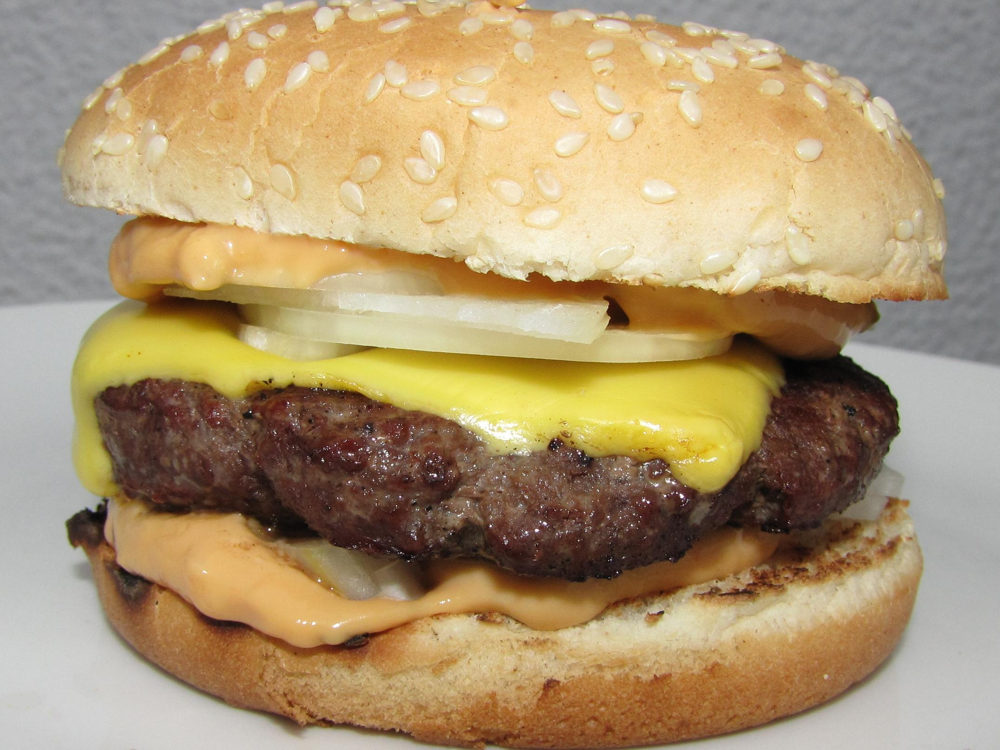

Burger

Nothing beats a classic burger with all the fixings.
Ingredients
- Ground beef
- Burger buns
- Cheese slices (optional)
- Lettuce
- Tomato
- Onion
- Pickles
- Ketchup
- Mustard
- Salt and pepper
Instructions
- Preheat the grill or a skillet over medium-high heat.
- Form the ground beef into patties, season with salt and pepper.
- Cook the patties on the grill or skillet for about 4-5 minutes on each side, or until cooked to your desired doneness.
- If using cheese, place a slice on each patty during the last minute of cooking to melt.
- Toast the burger buns on the grill or in a toaster.
- Assemble the burgers by placing a patty on the bottom bun, then adding lettuce, tomato, onion, pickles, ketchup, and mustard as desired.
- Top with the other half of the bun and serve immediately.
Home